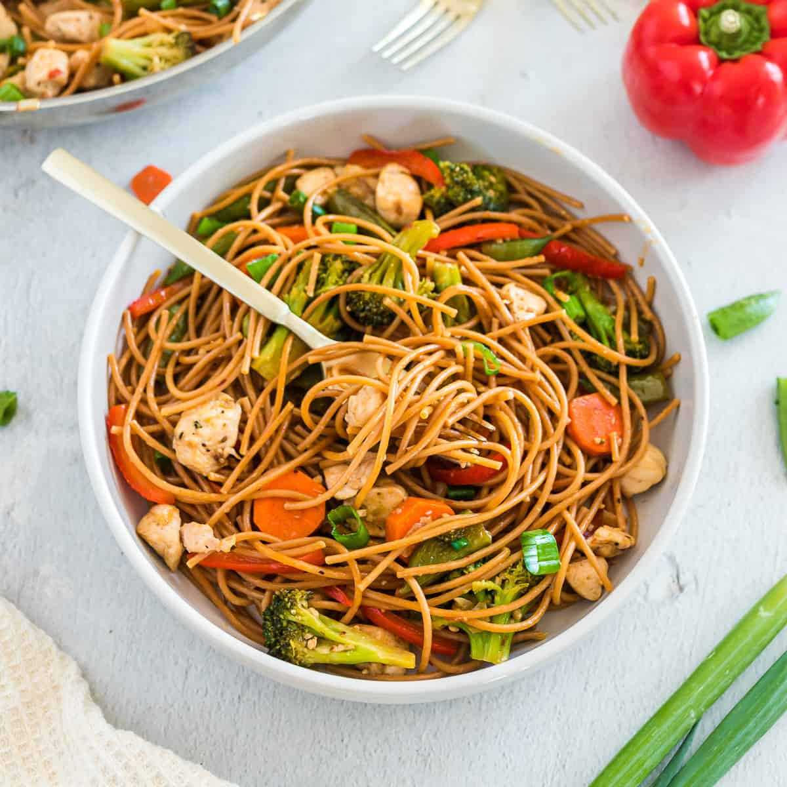

Pasta

Description
This pasta recipe is easy to make and contains chicken and broccoli. It is healthy as it contains little oil while making.
Our pasta recipe is Thai inspired as soy sauce is the seaoning of choice.
Ingredients
- Spaghetti
- Onions
- Garlic
- Chicken
- Cooling oil
- Bell peppers
- Scotch bunnet peppers
- Soy sauce
- Sliced carrot
- Broccoli
Steps
- Boil the pasta for 5-6 munites until cooked. Drain and set aside.
- Blend the peppers, onions and garlic slightly.
- Heat a cooking pan and add cooking oil.
- Add the blended mixture, diced chicken breast,diced carrot and onions to the pan and stir for 2-3 munites and add soy sauce to taste.
- Add the drained spaghetti in little portions while stiring homogenously.
- Add brocolli, lower the heat and allow to cook for two more munites.
- Serve with your drink of choice.
Home